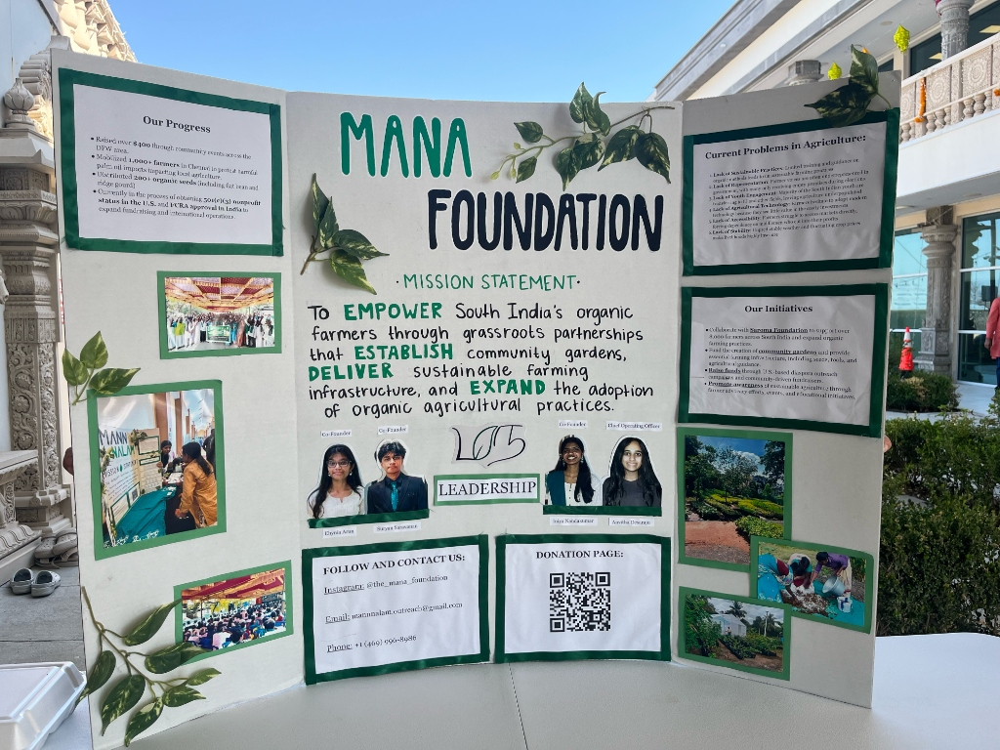
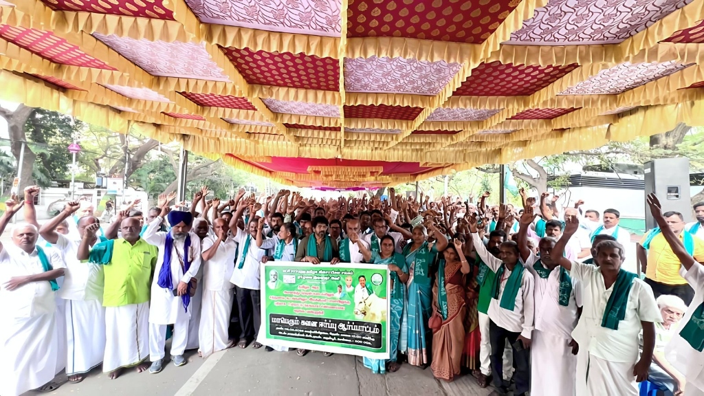
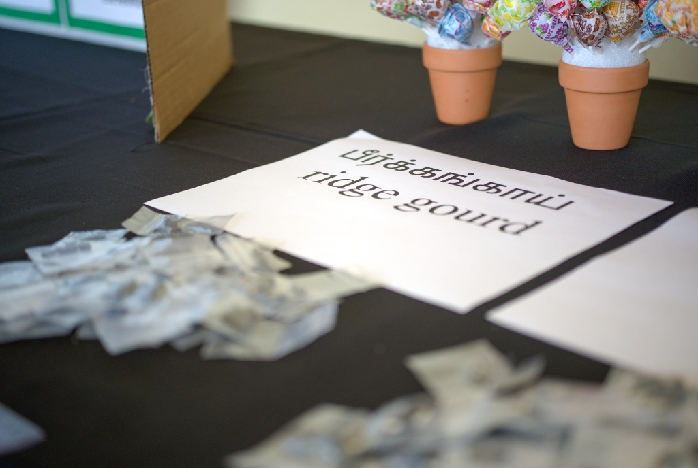
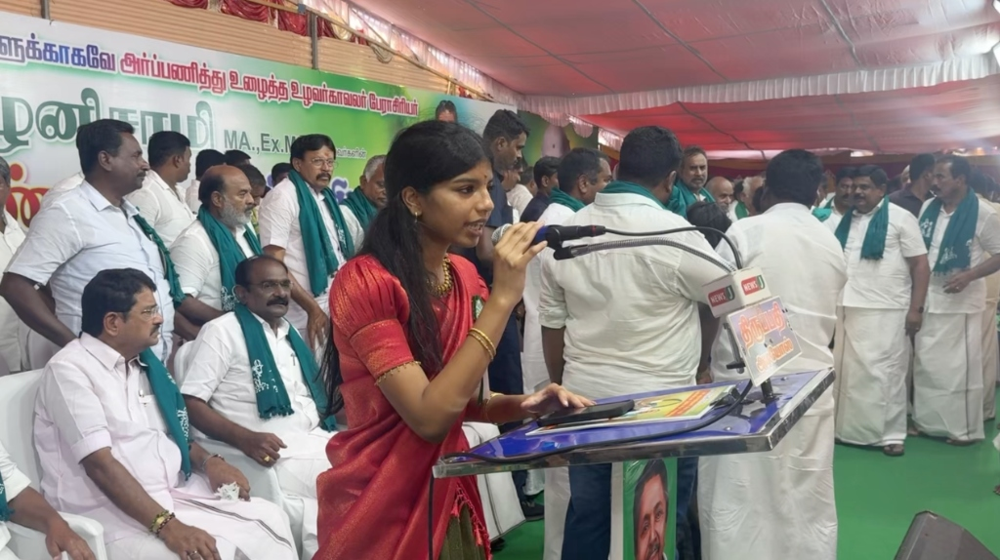

Our work begins in the soil, but it doesn’t stay there. We share the stories of farmers, the challenges they face, and the impact of sustainable agriculture.

Mobilized over 1,000 farmers in advocacy efforts.

Distributed 200+ packs of native seeds for free to individuals.

Across platforms like Instagram, we share the stories of farmers, the challenges they face, and the impact of sustainable agriculture. While raising awareness, we’re also building a community of people who come together to support and advocate for change.
